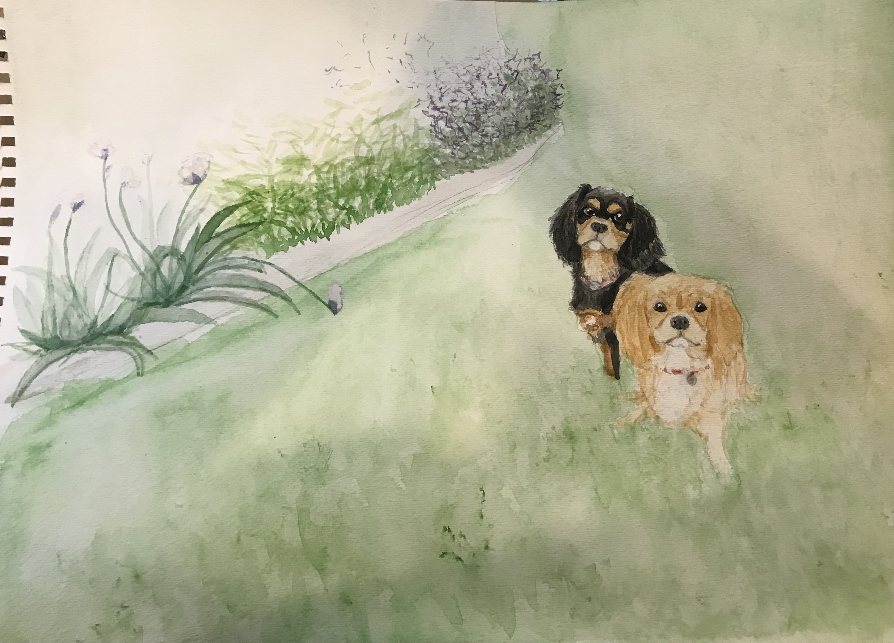

I got my toes wet with a little bit of learning on Codeacademy, and it turned out to be an ideal fit. I am creative and artistic, but also almost obsessed with attention to detail. Here I could combine the two- designing a project with colors and font-faces and then write it in code, finding every little bug and missing closing tag along the way. Coding is like another form of being an English major (which not surprisingly, I was) in that it is constantly evolving with a wide range of uses.
I spent many years in customer service after graduating, learning about people instead of stories. I enjoy helping people and always being busy, something that retail and food service allow for but not quite as much with a job in a cubicle. Coding seems to bridge that gap, working for people and interacting with clients, as well as projects that can always be improved upon and new languages to discover every day.
So as I grow and develop (ha), I hope to contribute to the community and to work and learn at the same time.
In the 200 years between her first publication and today, Jane Austen’s body of works were mostly associated with a more scholarly tradition. But as the 20th century drew to its close, a sudden outpouring of Austenian film and television adaptations created a still thriving cinematic Jane Austen tradition. This new means of representation created a new Austenian audience comprised of a complicated combination of Austen’s earlier, literary audience in combination and a new cinematic audience. Their divergent opinions combined to form expectational texts seemingly based on the novels. However, in the case of Sense and Sensibility the 1995 and 2008 film adaptations exemplify how it is not Austen’s original texts but instead prior adaptations that are upheld as the criterion for Austen adaptation.
INFJ. eight and twenty. philadelphia. enigma. hermit. dog. english major. janeite. gryffindor. old fashioned (& loves old fashioneds).